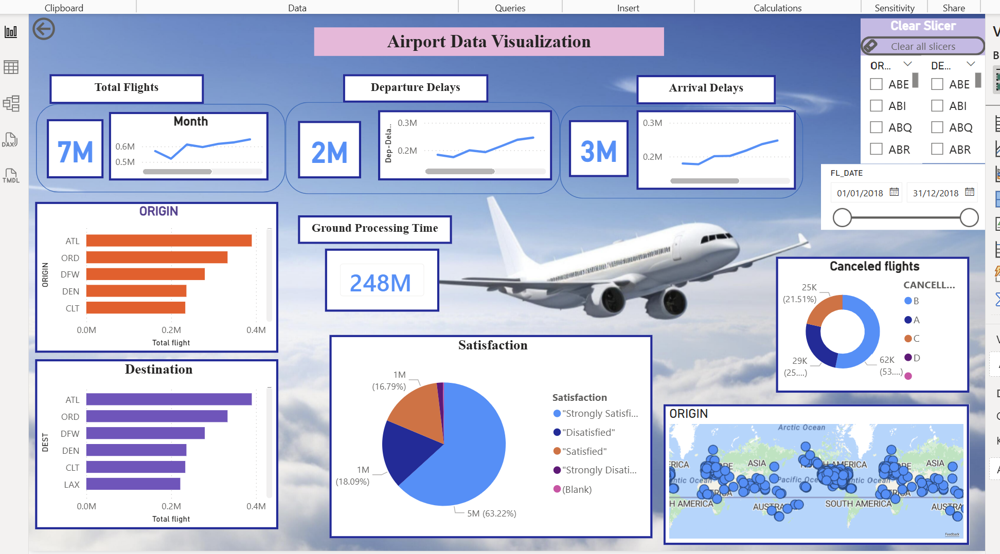
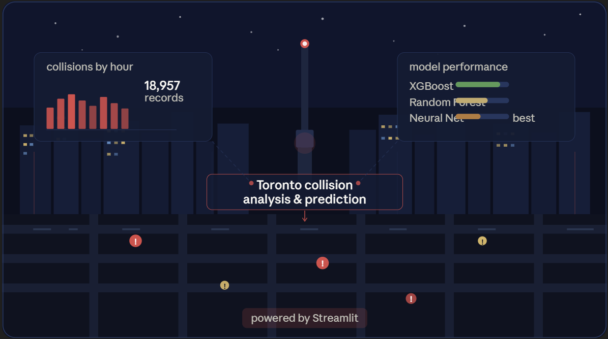
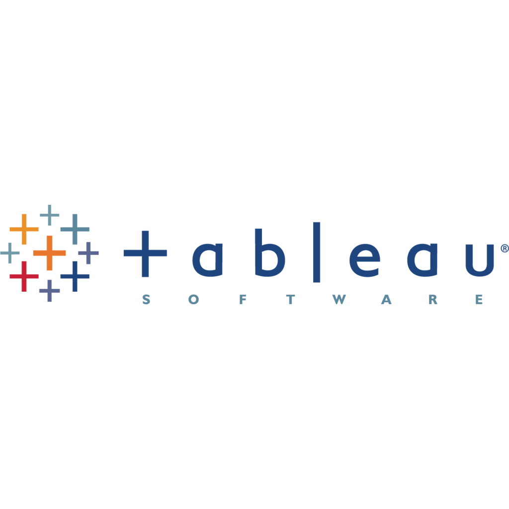
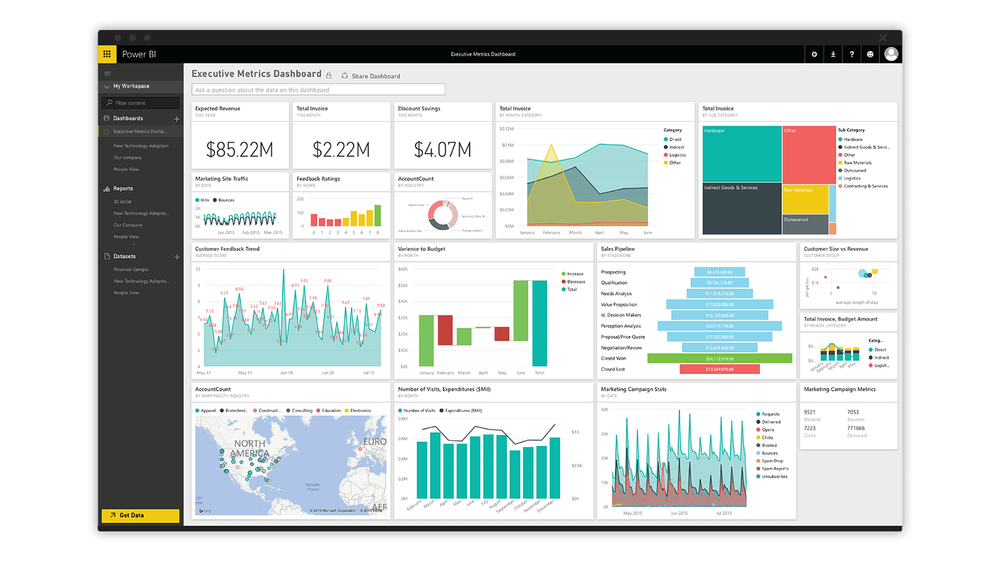
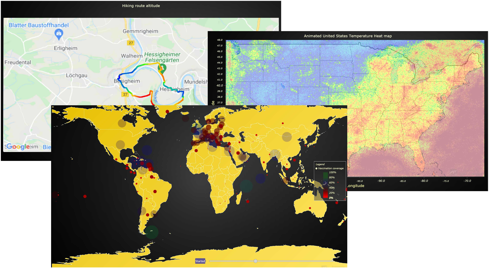

Machine Learning
Building reliable, interpretable machine learning systems that turn uncertainty into insight and insight into strategy.
I build the pipelines, decode the patterns, and translate data into strategy by uniting statistics, analytics, and database design to power intelligent business growth.” @Muluwerk
Building reliable, interpretable machine learning systems that turn uncertainty into insight and insight into strategy.
Python as the engine—data as the fuel—insight as the destination.

Power BI airport analytics dashboard featuring total flights, delays, ground processing time, satisfaction insights, custom DAX measures, and query‑editor transformations to solve key operational questions.

This project is an interactive web application built with Streamlit that analyzes 18,957 Toronto motor vehicle collision records from Open Data Toronto. It walks through a full data science pipeline starting from raw data cleaning and exploratory analysis to training and comparing three machine learning models: XGBoost, Random Forest, and Neural Network.

Interactive Tableau Dashboard for Sales Performance Insights This repository showcases my Global Sales Data Visualization Project, an end‑to‑end business intelligence solution built using Tableau Public. The dashboard provides a comprehensive view of global sales performance, enabling users to explore trends, identify high‑value markets, and uncover actionable insights.

Transforming raw data into interactive intelligence—Power BI dashboards that reveal patterns, drive decisions, and turn business complexity into clear, actionable insight.
From hypothesis to evidence—statistical thinking that uncovers relationships, validates ideas, and advances knowledge.

Blending spatial analytics and statistical rigor to illuminate how place shapes patterns and patterns shape decisions.
Ottawa, ON, Canada